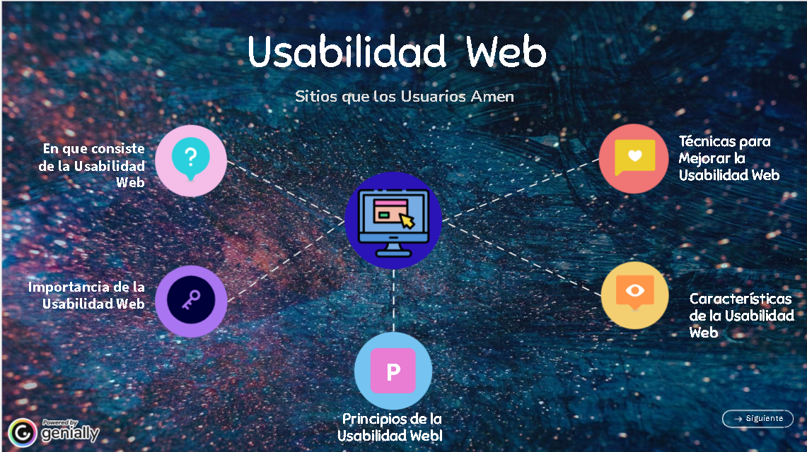

Teoría
Comprende los principios y estándares que sustentan la web, como la arquitectura cliente-servidor, los protocolos (HTTP/HTTPS), los lenguajes fundamentales (HTML, CSS, JavaScript) y las bases de datos (SQL, NoSQL). Es la base para construir aplicaciones robustas y seguras.
Las aplicaciones web son programas informáticos accesibles a través de un navegador web, que residen en un servidor y se ejecutan en el lado del cliente. Funcionan bajo un modelo cliente-servidor, donde el navegador solicita información, el servidor la procesa y la envía de vuelta. Sus pilares tecnológicos son HTML, CSS y JavaScript en el lado del cliente, y diversos lenguajes como Python o PHP en el servidor. Sus principales ventajas son la accesibilidad, mantenimiento centralizado, compatibilidad multiplataforma y facilidad para la colaboración.
- Los inicios (década de 1990 - Web 1.0): La web comenzó con páginas estáticas en HTML. La interactividad rudimentaria se lograba con CGI y luego con lenguajes del lado del servidor como PHP, ASP y JSP, que permitieron generar contenido dinámico.
- La era de la interactividad (finales de los 90 - 2000s - Web 2.0): La introducción de JavaScript y DHTML añadió interactividad al lado del cliente. El punto de inflexión fue AJAX en 2005, que permitió actualizaciones parciales de la página sin recargarla, mejorando drásticamente la experiencia del usuario (ej. Gmail). Esto impulsó el desarrollo de frameworks tanto del lado del servidor como del cliente y el auge de redes sociales y plataformas colaborativas.
- La era moderna (2010s en adelante): Caracterizada por el enfoque "mobile-first" y el diseño responsivo. Las Single Page Applications (SPAs), populares con frameworks como React, Angular y Vue.js, ofrecen una experiencia fluida al cargar una sola página HTML y actualizar dinámicamente su contenido. Finalmente, las Progressive Web Apps (PWAs) combinan lo mejor de las aplicaciones web y nativas, ofreciendo capacidades como instalación en el dispositivo y funcionamiento offline. La arquitectura moderna se apoya en APIs y microservicios para mayor modularidad y escalabilidad.
Video relacionado (YouTube)
Volver al inicioUsabilidad

¿En qué consiste?
Facilidad con la que los usuarios pueden aprender a usar, operar y entender una aplicación o sitio web para lograr sus objetivos de manera eficiente y satisfactoria.
Importancia
- Satisfacción del usuario
- Eficiencia
- Retención de usuarios
- Reputación de marca
- Accesibilidad
Principios
- Facilidad de aprendizaje
- Eficiencia de uso
- Prevención y recuperación de errores
- Satisfacción subjetiva
- Consistencia
- Retroalimentación (feedback)
- Flexibilidad y personalización
Características
- Clara y concisa
- Coherente
- Accesible
- Eficiente
- Visualmente atractiva
Mejoras
- Investigación de usuarios
- Wireframes y prototipos
- Pruebas de usabilidad
- Análisis heurístico
- Card Sorting
Desarrollo Web
El desarrollo de aplicaciones web es el proceso de construir software que funciona en un navegador de internet. Su esencia radica en el modelo cliente-servidor, donde la parte visible (frontend) interactúa con el usuario y se comunica con la lógica central (backend) que gestiona los datos y la funcionalidad.
Video relacionado (YouTube)
Volver al inicio- Flat 101. (s.f.). 7 técnicas para mejorar la usabilidad de tu web o app .
- IONOS. (s.f.). Usabilidad web: ¿qué es y cómo mejorarla? .
- Mailrelay. (2021, 25 de agosto). Test de usabilidad: qué es y cómo hacer uno para tu web .
- Semrush. (s.f.). ¿Qué es la usabilidad web y por qué es importante para tu estrategia SEO? .
- Universidad de Cantabria. (s.f.). La Usabilidad Web: Concepto y Componentes .
- UserTesting. (s.f.). Los 10 Principios Heurísticos de Nielsen .
- Zyro. (s.f.). Usabilidad web: qué es, cómo hacer un test y por qué es tan importante .
- Ferrer, J. (2014). Implantación de aplicaciones web. RA-MA.
- Fernández, P. E. (2018). Usabilidad web: teoría y uso. RA-MA.
- Apiumhub. (2021). Componentes web: qué son y cómo se utilizan . Apiumhub.
- Arsys. (s.f.). Componentes web: qué son y para qué sirven . Arsys.
- Digital55. (2022). Introducción a los web components: una guía básica . Digital55.